После скачивания архива с программой, можно распаковать его в любую папку, и можно начинать использовать. Для удачного запуска потребуеться Windows XP SP3 и выше. При первом запуске откроется окно с Лицензионным соглашением, для дальнейшей работы с программой необходимо нажать кнопку принять. Это стандартная MIT лицензия, с русским переводом можно ознакомиться например тут.
Внимание! Лаунчер не умеет скачивать или обновлять игру.
При первом запуске, путь к игре будет найден автоматически (при наличии установленного официального ланучера). Если по какой то причине этого не случилось, то заходим в Меню > Настройки находим пункт Папка с игрой нажимаем кнопку и выбираем нужную папку. После этого лаунчер готов к использованию.
Также, для удобства, что бы каждый раз не вводить логин/пароль, можно ввести их один раз в главном окне лаунчера, и поставить галочку возле Запомнить меня. Волнует безопасность данной функции?
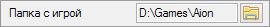 Выбор папки с установленной игрой, нужно выбирать корневую папку.
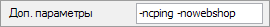 Поле для ввода дополнительных параметров запуска игры, указывать через пробел. Некоторые параметры с описанием:
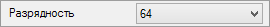 Выбор разрядности игрового клиента.
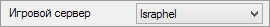 Выбор сервера, статус какого отображаться в главном окне программы.
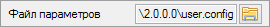 В поле отображен путь к файлу настроек лаунчера, который создается автоматически при первом запуске. Кнопка позволяет открыть в проводнике папку с файлом. Так же, при переносе лаунчера в другое место после первого запуска, сбросятся все настройки.
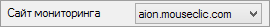 Выбор сайта с которого будет браться статус серверов.
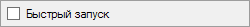 При включении, игра будет запускается через 3 секунды после запуска лаунчера. Лаунчер стартует свернутым, по этому если понадобиться остановить отсчет, можно развернуть его, и в нижней части окна: 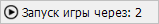 Нажать на кнопку и остановить/возобновить таймер.
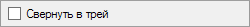 После запуска игры, лаунчер сворачивается в область уведомлений. Активно только при включенной функции Быстры запуск.
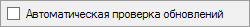 При включении, обновления лаунчера будут проверятся автоматически, и в главном окне, в строке уведомлений, будет написано предупреждение о новой версии.
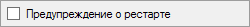 Включение функции предупреждения о рестарте.
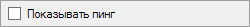 Включение функции отображения пинга.
|
В: Меня волнует безопасность введенных данных от игрового аккаунта в лаунчере.
|
|
В: Почему в лаунчере показывает что сервер работает, но в игру не заходит.
|
|
В: Почему пинг в лаунчере отличаеться от пинга в игре?
|
|
В: У меня не запускается игра/лаунчер/показывает какую то ошибку.
1) выбрать в настройках другую разрядность; 2) убедиться что ваша система соответствует системным требованиям; 3) попробовать сбросить настройки лаунчера по умолчанию; 4) если ничего не помогло, то подробней опишите проблему тут, приложив, если требуется, скриншот ошибки. |
В данном руководстве по возможности были охвачены все аспекты работы программы. Если у вас все же остались какие то вопросы, или есть предложения по улучшению, то пишите их в Issues на GitHub.